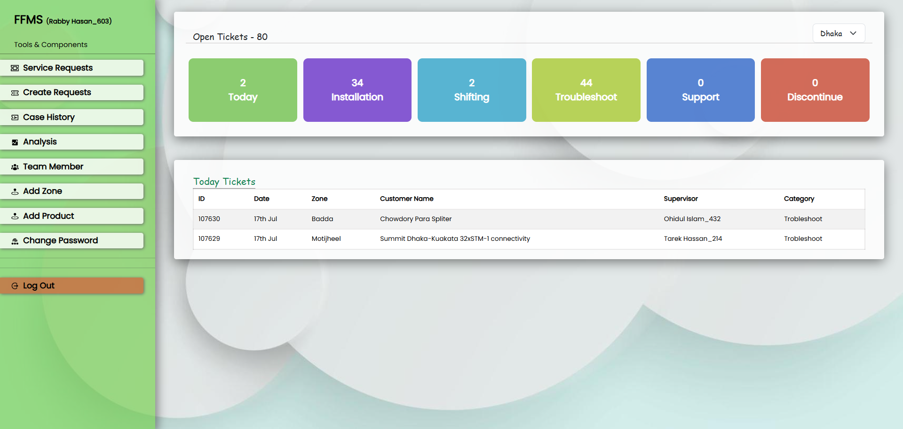
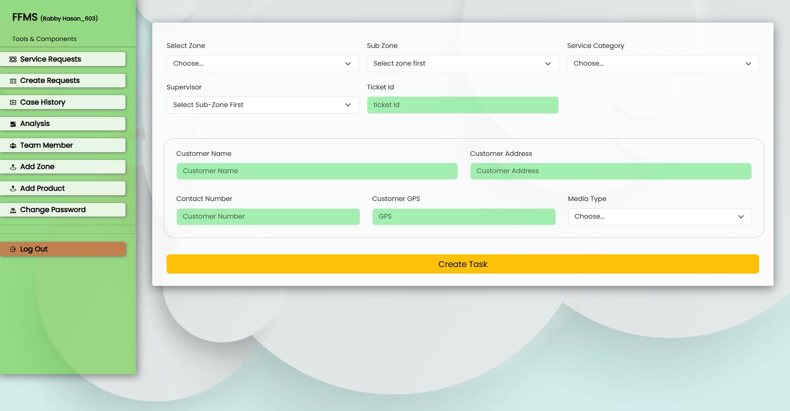
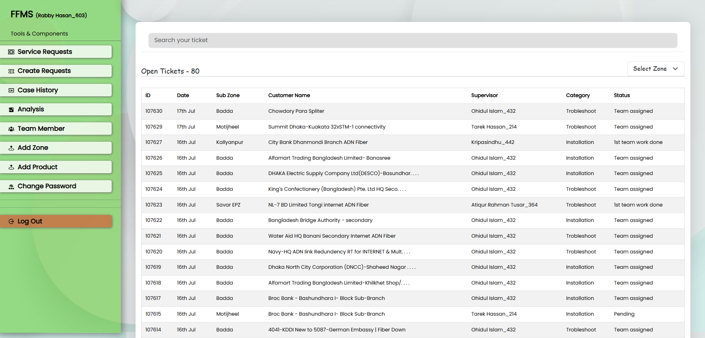
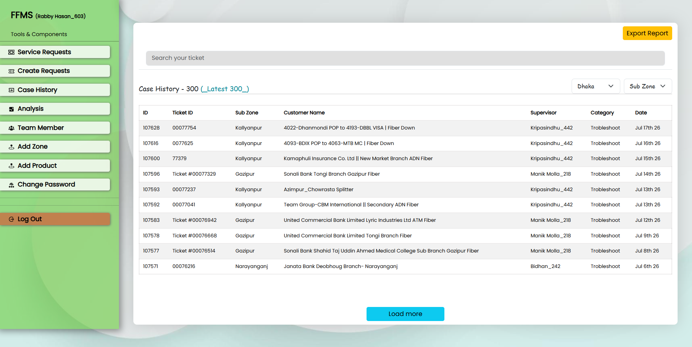
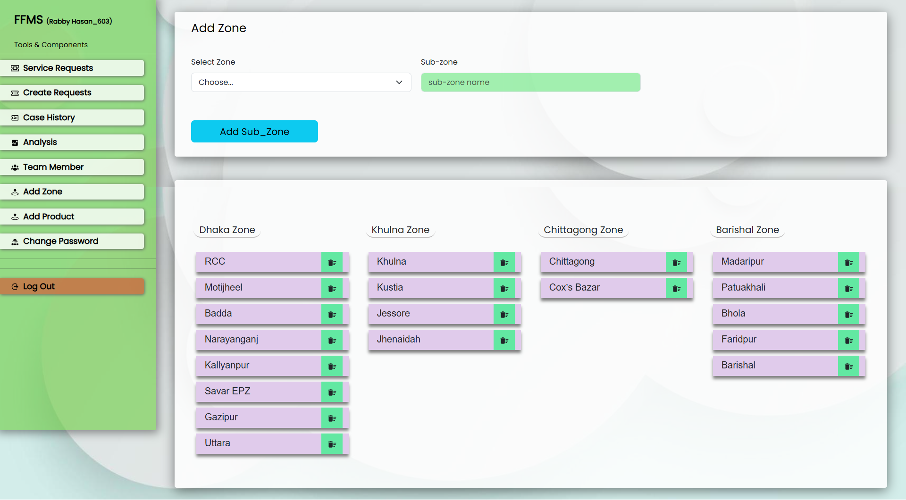
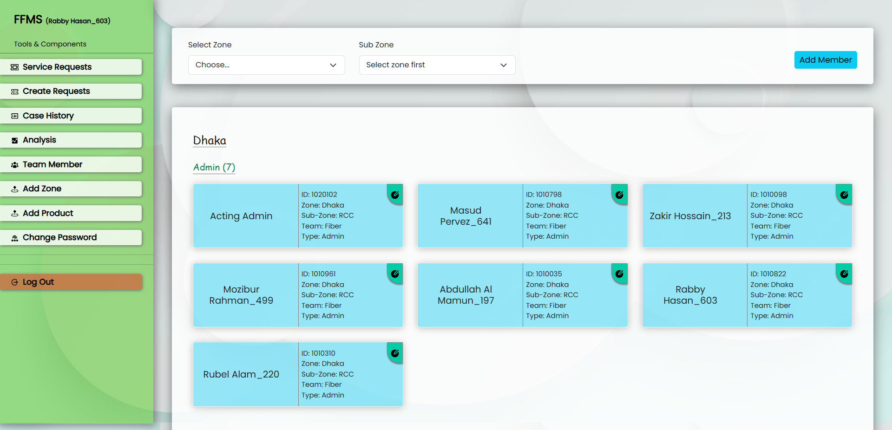
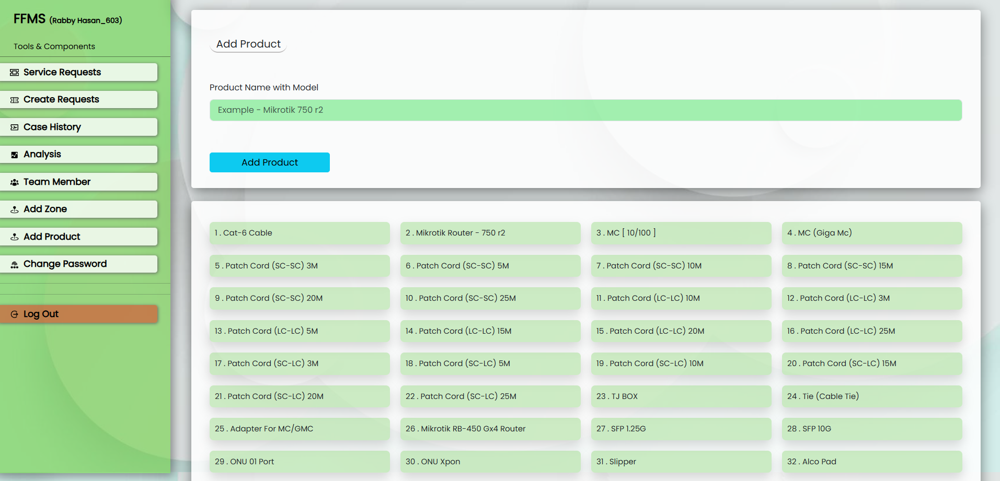
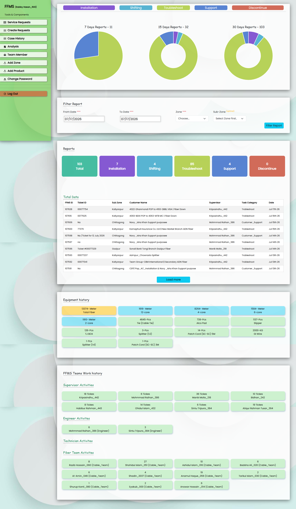
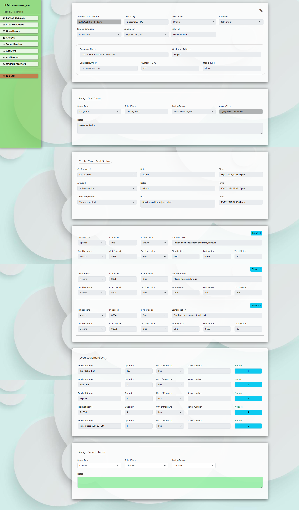

1. Executive Summary & Overview
The Field Force Management System (FFMS) is an enterprise application engineered with the MERN stack to centralize internet service operations. It systematically processes daily workloads into 5 core ticket categories: Installation, Troubleshooting, Shifting, Dismantal, and Support. This ensures real-time deployment velocity, inventory accountability, and dynamic field telemetry logging.
2. System Dashboard & Real-Time Queues
The central dashboard aggregates incoming work orders instantly. Supervisors can review real-time ticket counters partitioned by service status. A modern queue immediately reflects high-priority network operations alongside active supervisor listings.

Figure 1.1: Live Command Centre Dashboard showing categorized operational queues and counts.
3. Ticket Creation & Dispatch Mapping
Tickets are generated dynamically with exact attributes: Customer details, dedicated category tags, and precision Customer GPS Coordinates. This enables seamless regional tracking and mitigates logistical routing issues for technicians.

Figure 2.1: Asynchronous Work-Order Creation Module capturing GPS Telemetry and Category parameters.
4. Live Queue Tracking & Service Requests
The live service list logs absolute field checkpoints including transit, arrival, and completion timestamps. To ensure seamless logging, tasks transition from Pending down to custom milestone validation markers.

Figure 3.1: Granular Active Service Pipeline tracking real-time status allocations per field unit.
5. Case History Archinery
The system permanently retains past performance sheets. Advanced search engines index archived assets, allowing supervisors to access specific cases while exposing an integrated Export Report framework for raw data parsing.

Figure 4.1: Historical Case Records displaying archived ticket assets.
6. Geographical Resource Configurations (Zone Management)
System components allow regional scoping partitioned across major divisions (Dhaka, Khulna, Chittagong, Barishal) mapped into localized dynamic sub-zones for pinpoint team allocation.

Figure 5.1: Multi-Tier Regional Infrastructure Configuration Management.
7. Role-Based Access Directory (Team Members)
The platform establishes precise permission sets mapping directories specifically for acting administrative heads, direct field supervisors, on-ground technicians, and regional cable pulling units.

Figure 6.1: Node Hierarchy Dashboard showing structured operational workforce nodes.
8. Logistics Ledger & Inventory History
Tracks all distributed network components down to absolute unit metrics (Fiber types, Mikrotik routers, splitters, structural tower components). This ensures warehouse asset usage matches active on-ground jobs.

Figure 7.1: Centralized Material Asset Directory and Model Registries.
9. Advanced BI Performance Analytics & Excel Data Export
The Advanced Business Intelligence (BI) Performance Analytics and Comprehensive Reporting Engine stands as the ultimate core module of the FFMS platform. It is engineered using deep time-series filtering and custom database pipelines to aggregate complex field parameters into crystal-clear operations audits. Everything is separated, measured, and tracked precisely.
A. Multi-Tier Temporal Analytics (7/15/30-Day Intervals)
- Rolling Performance Indicators: Automatically tracks asset deployment metrics, ticket resolution ratios, and technician velocity over fixed 7-day, 15-day, and 30-day operational windows.
- Operational Trend Assessment: Provides instant statistical modeling to spot resource allocation bugs, peak traffic disruptions, and baseline material consumption behavior.
B. Dynamic Granular Range Filtering (Date-Wise & Date-to-Date)
- Single-Date Chronology Audit: Administrative heads can lock the entire system view into one distinct day to analyze high-granularity tickets and team activity logs.
- Advanced Date-to-Date Range Engine: Features a fully custom time-range selection matrix enabling managers to execute long-term performance evaluations, tracking progress and operational consistency between any two specific calendar end-points.
C. Exhaustive Logistics & Material Ledger Separation
The system dynamically breaks down and completely decouples all equipment and inventory tracking matrices inside any filtered date frame:
- Precision Fiber Deployment Tracking: Automatically totals the absolute on-ground asset metrics, outputting exactly how many meters of fiber cable were consumed.
- Device Category Ledger: Displays a dedicated distribution checklist showing exactly which network devices (e.g., Mikrotik routers, splitters, ONU modules, media converters) were deployed.
- Absolute Piece Volume Counts: Separates hardware metrics down to individual item pieces, showing exactly how many pieces of each sub-component left the central warehouse registry.
D. Granular Workforce Accountability & Complete Task Logs
- Date-to-Date Performance Attribution: Provides explicit transparency by tracking individual workers, displaying exactly who did how much work, which specific tasks they executed, and their individual performance output over the selected timeline.
- Checkpoint Mapping: Captures complete field movement history, showing the exact time when a field crew transitioned to transit, when they hit the customer coordinates, and the precise timestamp when the job reached final closure.
E. Segmented Ticket Performance & Infrastructure Maintenance
Provides clear executive visibility by completely isolating system operations into distinct analytical buckets, allowing managers to instantly view total workloads separately:
- Categorized Work-Order Partitions: Dynamically calculates and renders separate execution sheets for Installations, Troubleshooting operations, Shifting requests, Dismantle routines, and general Support workloads.
- Specialized Fiber Cable Cut Diagnostics: Features a dedicated incident reporting infrastructure for major network line breaks, logging deep physical data including the exact fiber core colors affected and the precise core termination pairs to ensure immediate context for repair squads.
F. Enterprise Excel Spreadsheet Data Export
- One-Click High-Speed Compilation: Integrates an optimized server-side rendering pipeline to instantly bundle all filtered data logs, workforce performance charts, and raw material ledgers into highly clean Excel spreadsheets (.xlsx).
- Zero Executive Overhead: Empowers supervisors to smoothly generate off-line data backups for external corporate accounting, payroll audits, or internal corporate stakeholder meetings.

Figure 8.1: Complete Business Intelligence Performance Engine with integrated multi-format data export frameworks.
10. Granular Ticket Lifecycle & Comprehensive Field Activity Auditor
The Granular Ticket Lifecycle & Field Activity Auditor is an exhaustive, full-stack monitoring view that tracks a single service ticket's active roadmap. It prevents communication gaps between the command desk and operations crews by preserving historical node logs.
A. Dynamic Ticket Metadata & Context Layer
- Creation Attributes: Persists critical origin markers including exact initialization timestamp, issuing creator ID, structural operations category, and assigned regional zone frameworks (e.g., Dhaka/Kalyanpur).
- Customer Profile Synchronization: Automatically references active account data tables, loading client identity strings, delivery addresses, communication numbers, and structural media configurations (e.g., Fiber).
B. First-Mile Operation Dispatch Framework (Team Assignment)
- Resource Allocation Logging: Tracks workforce delegation instantly, recording the targeted operations zone, active field squadron group name (e.g., Cable_Team), primary technical handler, and initial dispatch timestamp.
- Contextual Task Directives: Incorporates explicit management briefing fields to document incoming status requirements directly for the field units.
C. Real-Time Milestone Timeline Verification
Aggregates granular, user-triggered field telemetry markers to log precise timestamps across distinct on-site workflow phases:
- Transit Interval Logging (On The Way): Records the precise operational timestamp when the field team begins movement, alongside travel notes.
- Site Proximity Capture (Arrived): Registers validation time parameters as soon as field units enter customer coordinates.
- Final Execution Closure & RFO Matrix: Captures the terminal completion timestamp alongside the technician's **RFO (Reason For Outage / Remarks For Operation)** data payload, detailing the technical resolution.
D. Advanced Structural Fiber Telemetry (Multi-Link Mapping)
Provides deep infrastructural monitoring by logging geometric parameters across distinct physical links (Fiber-1, Fiber-2, Fiber-3) on a single deployment:
- Core Color and ID Specifications: Details specialized hardware routing indices, mapping specific in/out core dimensions, fiber infrastructure hash keys, and exact **Fiber Core Colors** (e.g., Blue/Brown).
- Joint Location Mapping: Stores string values pinpointing geographical physical configurations (e.g., Mirpur footover bridge, Capital tower samne).
- Geometric Volumetric Deployment: Logs physical deployment variables, tracking physical starting markers, terminal end markers, and calculating the absolute **Total Meters** consumed.
E. On-Ground Inventory Asset Ledger Integration
- Consumption Analytics: Implements a local components ledger mapping all physical products utilized on-site (e.g., TJS Box, Slipper, Patch Cords).
- Warehouse Stock Auditing: Captures exact quantities, tracking units (e.g., Pieces), and equipment hardware serialization, maintaining complete consistency with the central database storage.
F. Escalation & Secondary Operations Dispatch
- Multi-Squad Routing Panel: Embeds an asynchronous downstream panel to assign secondary engineering nodes or auxiliary cabling support units if the primary team signals escalation requirements.

Figure 9.1: Granular Field Telemetry Monitor tracking structural core allocations, deployment parameters, and active RFO responses.